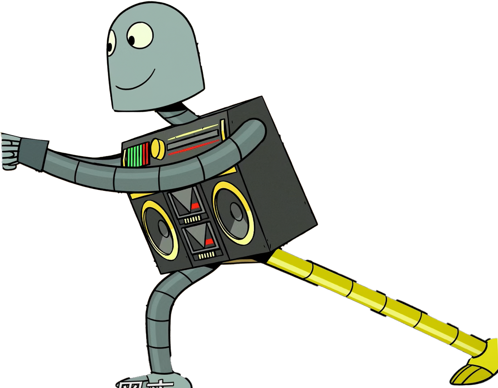
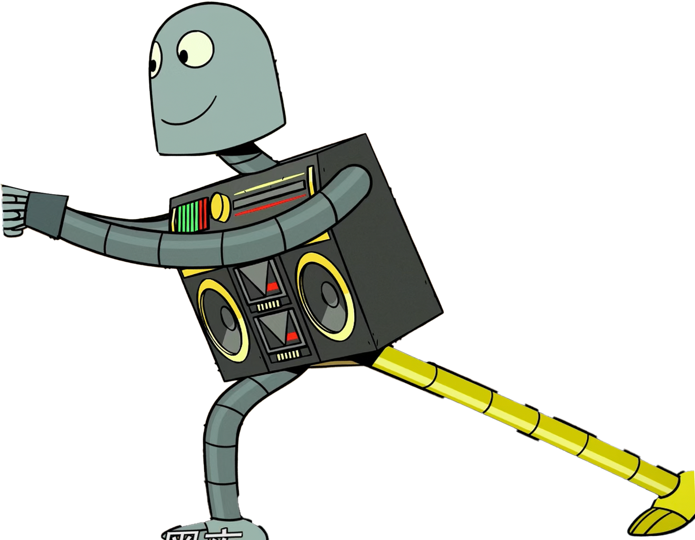
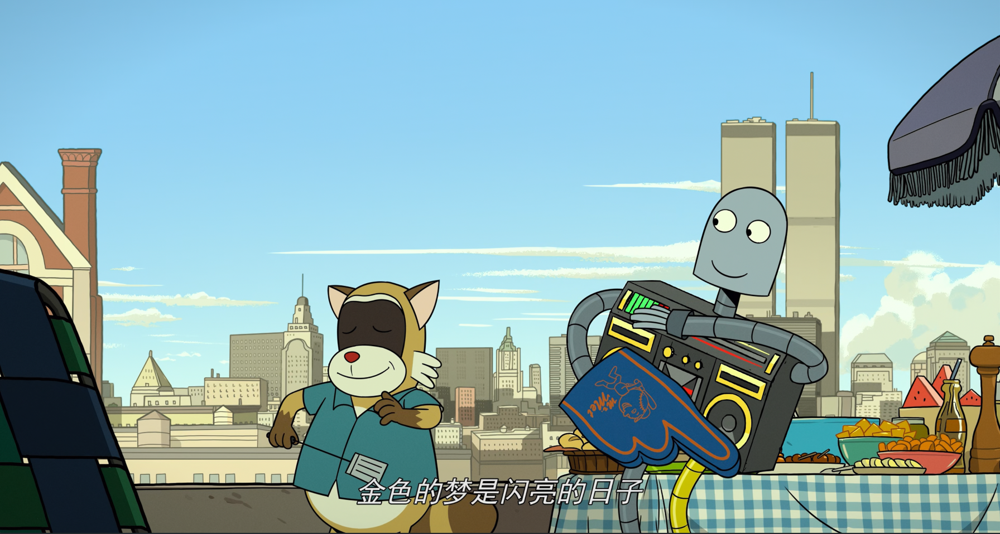
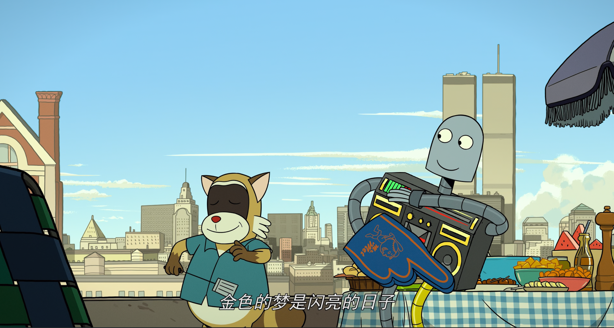

故事简介
预告片 / 片段
关于这部电影
1984 年的纽约，一只孤独的小狗从电视购物中买来了一个机器人作为朋友。他们一起度过了美好的夏天，却在科尼岛意外分离……
- 关键词：陪伴 / 孤独 / 分离 / 记忆
- 推荐理由： 如果你喜欢《疯狂约会美丽都》或《魔术师》这类充满人文气息的动画，或对无需语言却能直击人心的故事感兴趣，《机器人之梦》会是一场触动心灵的体验。它用最简洁的形式，讲述了每个人都可能经历的柔软回忆与生命旅程。
1984 年的纽约，一只孤独的小狗从电视购物中买来了一个机器人作为朋友。他们一起度过了美好的夏天，却在科尼岛意外分离……

 
